4.1 First Line of Defence
The human immune system has two major goals:
- to stop pathogens invading the body and causing infection
- to destroy invading pathogens and minimise the damage they do
A trigger is needed to activate the immune response: an invading pathogen like a bacterium or virus, a protein sticking out from the surface of a pathogenic cell, or even pollen or a food chemical. Anything that creates an immune response is called an antigen. The immune system has three lines of defence:
- First line – prevents entry to the body
- Second line – non-specific defence
- Third line – specific defence
First line of defence: innate and non-specific
The first line of defence is a system of barriers to stop pathogens entering the body.
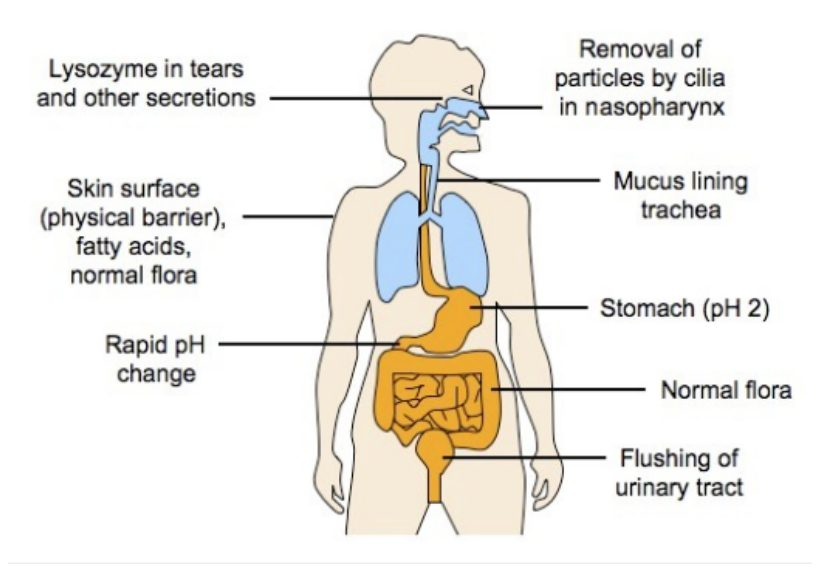
Physical barriers stop pathogens entering by blocking or trapping them:
- Intact skin is your largest organ and forms a waterproof mechanical barrier. Micro-organisms living on your skin can't get through unless it's broken.
- Mucus is secreted by cells lining the respiratory, digestive and excretory systems; it traps invading pathogens. (Technically, these tubes are "outside" the body: a pathogen hasn't infected you until it enters a cell.)
- Cilia lining the respiratory tract move mucus and trapped microbes out of the tubes, to be sneezed, coughed or swallowed.
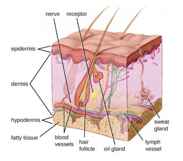
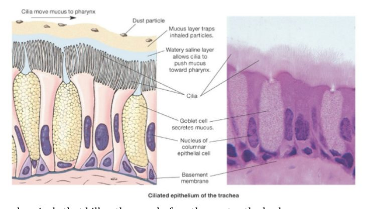
Chemical barriers kill pathogens before they enter the body:
- Lysozyme: an enzyme in saliva and tears that breaks down bacterial cell walls, killing them.
- Stomach acid: cells lining the stomach secrete hydrochloric acid, which kills bacteria and parasites swallowed with food.
- Mutualistic ("friendly") bacteria on the skin stop harmful bacteria settling by lowering the pH.
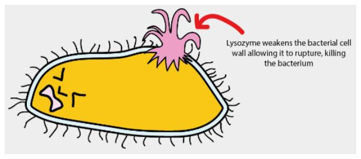
If a pathogen gets past this first line, the second line of defence is activated.
4.2 Second Line of Defence
The second line of defence comes into play once the first line has been bypassed, e.g. through a cut in the skin, so pathogens have reached the body's tissues. Its mechanisms are also innate and non-specific:
- phagocytes
- inflammation
- fever
Phagocytes
Phagocytes are mobile white blood cells that move out of blood vessels to the site of infection, engulf foreign particles (phagocytosis) and destroy them using lysosomes containing digestive enzymes. White blood cells have very large nuclei. A healthy person has many more red blood cells than white; a high white cell count may be due to infection, inflammatory disease (such as allergy) or leukaemia.
Phagocytosis
In phagocytosis, a white blood cell meets foreign material and engulfs it, forming a vacuole inside the cell. Lysosomes fuse with the vacuole and release digestive enzymes, which break down the material.
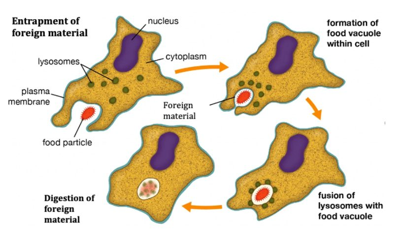
- Pus is the remains of dead white blood cells that have engulfed too many bacteria, plus cell debris and some living white blood cells.
- Pimples are skin pores clogged with dirt or bacteria that have become infected.
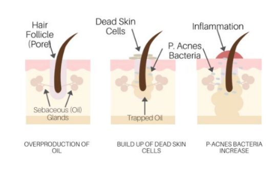
The phagocyte meets a bacterium and it, enclosing it in a . Then fuse with it and release digestive that break the bacterium down.
Inflammation
When your body meets an offending agent (viruses, bacteria, toxic chemicals) or is injured, first-responder cells that are damaged release chemicals called histamines. Histamines increase blood flow to the area, bringing more white blood cells and repair cells.
Inflammation is characterised by red, hot, painful, swollen areas caused by the increased blood flow. Antihistamines reduce the swelling by reversing the effect of histamine.
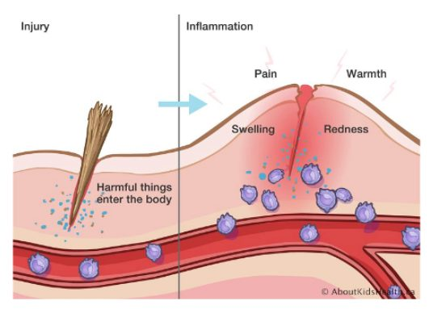
Fever
A fever is a temporary rise in body temperature, usually caused by an infection. Normal body temperature is about 37 °C, regulated by the hypothalamus in the brain. When bacteria enter the body, the toxic chemicals they release reset the hypothalamus's set point higher.
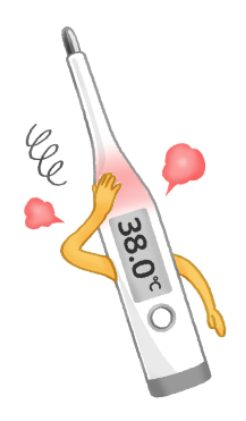
Fever has evolved in warm-blooded animals over 600 million years. The higher temperature puts bacteria under heat stress, which inhibits their growth or kills them. Although a fever costs the body extra energy, the survival benefits outweigh the cost, and the rise in temperature also acts as an alert that activates other immune responses.
The second line is innate and non-specific: phagocytes, inflammation and fever act against anything non-self.
4.3 Third Line of Defence
The third line of defence is the adaptive immune response: it can change and adapt to foreign pathogens the body hasn't met before. It is also specific: it targets particular antigens, not just any antigen.
It involves specialised white blood cells called lymphocytes (B cells and T cells), which recognise specific pathogens or antigens, react to the infection, and remember the antigen so the body is ready if the same pathogen invades again (immune memory).
B cells
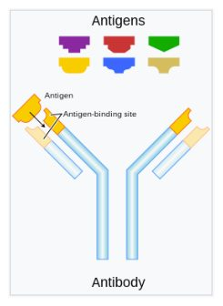
Each B cell is made to attack only one type of pathogen. B cells do this by making specific antibody molecules that are released like pathogen-seeking missiles.
- Antibodies are Y-shaped proteins called immunoglobulins, with 2 antigen-binding sites at the tips of the "Y". They attach to specific antigens and mark them for phagocytosis.
- Every pathogen has its own surface proteins that show the body it is non-self and what type it is. These are antigens. Toxins in the bloodstream can also be antigens. An antigen is any substance that can start an immune response and bind to antibodies.
B cells are made in the bone marrow and then migrate to the lymphatic system, where they encounter specific antigens. Each B cell displays its antibodies on its surface, so it can recognise its antigen.
When a B cell meets its matching antigen, it divides quickly and differentiates into:
- Plasma cells, which produce large numbers of antibodies
- Memory B cells, which remain after the infection to remember the antigen if it returns
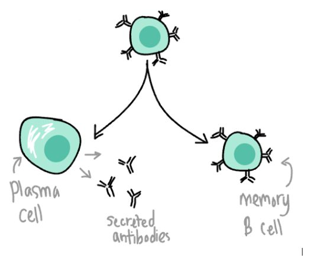
T cells
Each T cell is also specific to one type of pathogen, but T lymphocytes do not produce antibodies. T cells control and regulate the third line of defence. There are two main types:
- T helper cells release chemicals that stimulate B cells to make antibodies and to become memory cells.
- T cytotoxic cells target specific virus-infected body cells and kill them by releasing powerful enzymes onto the cell membrane. One enzyme (perforin) makes a hole in the membrane, which causes cell death.
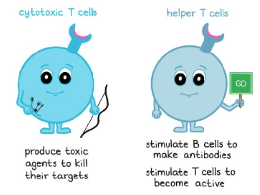
Summary of the third line
| Humoral response | Cell-mediated response |
|---|---|
| B cells only; specific immunity | T cells: T helper and T cytotoxic cells; specific immunity |
| Plasma cells: produce antibodies specific to antigens | TH cells: control the immune response |
| Memory B cells: remain behind after infection | TC cells: target and kill infected body cells |
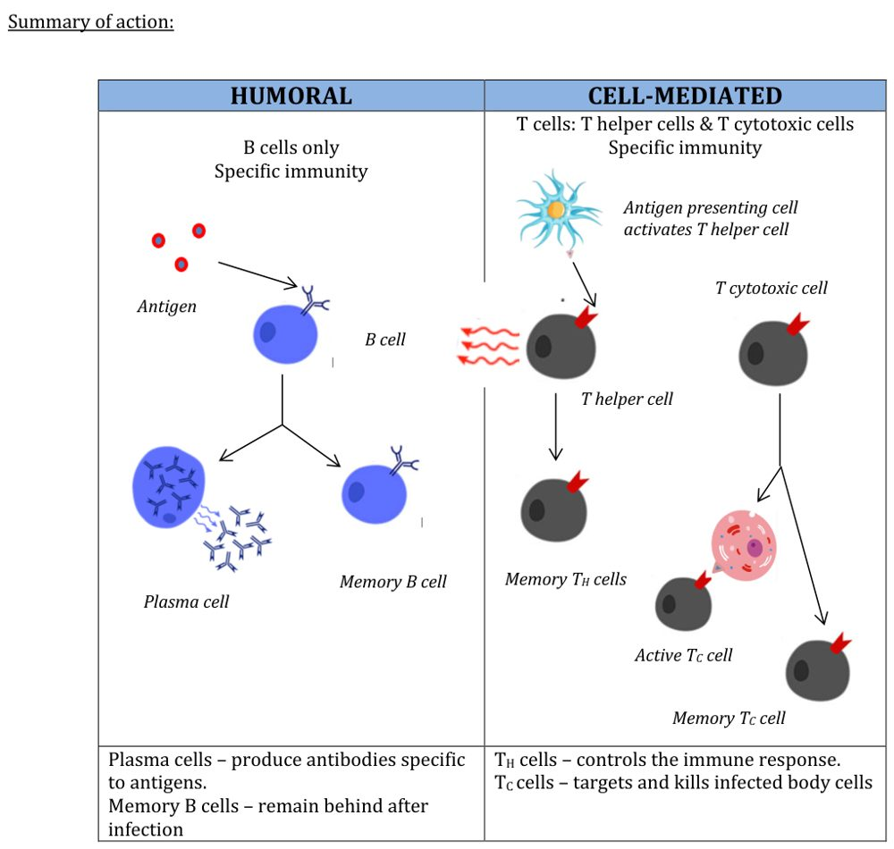
Test your understanding (page 49)
- The first line of defence is "innate" and "non-specific". What does this mean?
- Choose one first-line barrier and explain how it protects your body.
- What is the difference between physical and chemical barriers?
- Innate: it doesn't need to be learned; the instructions are in your genes. Non-specific: it acts on anything classified as non-self.
- Example: intact skin forms a physical barrier that stops pathogens entering and causing infection.
- Physical barriers block or trap pathogens. Chemical barriers react chemically with pathogens, stopping them working or killing them before they enter the body.
- Explain, with diagrams, how phagocytes carry out phagocytosis.
- A student picks up a thorny branch and the thorns pierce his hand. Outline the second line responses that defend against invading pathogens.
- The phagocyte meets a pathogen and starts to engulf it; its membrane surrounds the bacterium and brings it into the cell inside a vacuole; lysosomes fuse with the vacuole and digestive enzymes break the bacterium down; nutrients diffuse out of the cell.
- The thorn breaks the skin, so bacteria can enter. Damaged cells release histamine, starting inflammation: blood vessels dilate, increasing blood flow and bringing many white blood cells (phagocytes) to engulf the bacteria. The area becomes swollen, red, hot and painful. If infection takes hold, a fever may develop.
- Why do we sometimes have a fever with a bacterial infection?
- The third line of defence is "adaptive" and "specific". What does this mean?
- Toxins released by the bacteria switch on the fever response, raising body temperature above 37 °C to inhibit bacterial growth or kill the bacteria.
- Adaptive means "learnt": it meets antigens and makes cells that target them, changing as it meets new antigens. Specific means it targets one particular antigen rather than anything non-self.
- An antigen is .
- An antibody is .
- a. Where are B cells made? b. What happens when a B cell meets its matching antigen? c. Are plasma cells B cells?
- What is the function of a. T helper cells? b. T cytotoxic cells?
- Both B and T cells make memory cells. Why is this important?
- a. In the bone marrow. b. It is signalled to divide and differentiate into plasma cells, which make lots of antibodies specific to the antigen, and memory B cells, which stay behind to act quickly if the antigen returns (giving immunity). c. Yes: plasma cells are differentiated B cells.
- a. They release chemicals that stimulate B cells to make antibodies and become memory cells. b. They target specific virus-infected body cells and kill them by releasing powerful enzymes onto the cell membrane.
- Memory cells remember specific antigens, so if they meet them again they act very quickly and kill them before they can do damage. This provides immunity.
HIV invades T helper cells and over time causes AIDS; about 35 million people have died from AIDS in the last 50 years. Describe why the invasion of T helper cells by HIV can eventually cause death.
HIV uses T helper cells to make more HIV, so they can't direct the immune response. Without T helper cells, B cells aren't stimulated and no antibodies are made, so the body can no longer respond specifically to other opportunistic infections, which eventually cause death.